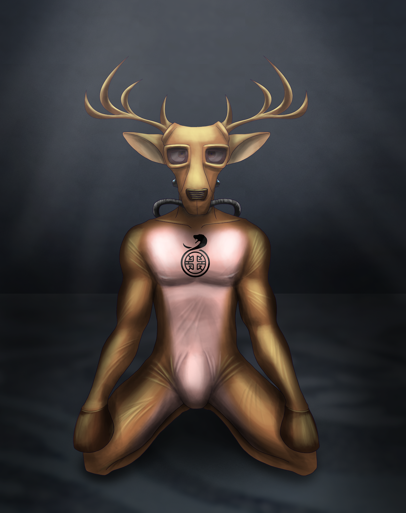

The Buck Stops Here
Written by TwistedSnakes
Commissioned by Nareth
Illustrated by DragonTears

A figure stirred the darkness of a cold room. A harness was locked around the head of the cervid body and a tube was screwed on to the mouth attachment of the harness, forcefully feeding the wearer a nutrient solution to keep him alive.
Two more tubes were attached to the naked body's nether regions, one on his cock in a gentle but constant suck and one in his tailhole to clear his waste. Both these tubes were secured in place by a metal frame around the wearer's waist, crotch, and ass, tightly bolted together so that it could not easily be removed.
The figure stirred, fighting the lethargy that came with the cold. He was Nareth the deer, although that was soon to change. The staff team of the Silver Serpent had promised him very, very bad things, and Nareth wasn't sure that he wanted any of that. Not that there was any way out of it, but he should at least try. Perhaps he'd find a way out, but not now. Sleep feels good now. Maybe he'll try after another nap...
One week ago...
Dressed in a sharp and white tuxedo, Nareth stepped into the main lobby of the Silver Serpent Casino. The past two years of lobby decor had been different, and this year was no different. Just like most other hotels and tourist attractions, the Silver Serpent liked to change up the theme of the place. However, unlike anywhere else, the scale of the changes here was incredibly drastic. The first time he entered, he was greeted with a water lagoon, where streams of water poured from the high ceiling into pools in the ground. In the middle of the lobby was a fountain with a stone waterfall housed three rubber-clad mermaids swimming in its waters. The next year he was there, the lobby had already been completely transformed into a nautical scene, complete with barrels, wooden floorboards, and a mast in the middle with a crow's nest at the top that completed its pirate ship look.
This time, he stepped into a galaxy-themed lobby. The walls, floor, and ceiling were painted a hue so dark, they felt like they were fading away into nothingness. The only hints that he was still in a room was the dimly-lit corridors leading away into the other wings of the expansive casino. On the ceiling, massive spheres painted to look like the planets of the solar system hovered and circled the bright bulb in the middle, and hidden projectors made stars glow and ebb on the walls. Nareth could not help but slow his breathing as he stared at the room in awe.
"Member Nareth detected," a robotic voice called out to him from the ceiling. "Room nine-four-eight has been assigned to you. Please enjoy your stay."
"Thanks!" the deer responded almost on instinct before realizing he was responding to a robot. Nobody around him seemed to notice as he blushed in embarrassment. He looked around him and realized that some of the people walking around him were actually latex drones dressed in rubber space suits. One of them walked past him and Nareth felt a twitch in his pants as the smell of latex reached his nose. Perhaps he would call for "room service" tonight.
Unlike most patrons, Nareth knew how to make money. His knowledge of statistics and a little bit of card-counting had helped him make a few thousand each time he had been here and he was ready to try his hand at the higher-stake tables.
After an hour of games at the relatively-low stakes games, the deer had warmed up and was ready to take on the bigger games for the first time. Perhaps it was the psychological fear of risking thousands of dollars in a single game, or it was the other players that seemed to mentally hustle him with their intimidating physiques and expressions. Either way, his focus seemed to wane at important parts and he set himself back at least thirty thousand.
But that was fine. He'd just bet thirty thousand in the next round and make everything back. Or not, as the tiger dealer dressed in a smart grey vest flipped the cards, revealing their faces below. Nareth groaned and checked the credits on his card with the game table's electronic display. A unique service offered by the Silver Serpent was the automatic loaning of credits into a patron's card whenever they ran out of money. While it had helped a few gamblers out of a gambling debt once they struck big, this service had landed Nareth in a debt of ten grand. Easily resolved, if he betted sixty thousand in the next round. And won, that is.
An hour later and a hundred thousand in debt, Nareth shakily got off the gambling table. His numerical skills were starting to fail him at the games and he was feeling a little nervous inside. But he was desperate. Desperate to earn it back.
He stumbled down a corridor. There was a particular game called the "Devil's Dice" that was fiendish even by the Silver Serpent's standards. Ten dice would be rolled one by one, and each person would bet on the outcome. Based on their predictions, players could make up to a hundred times the amount they bet or could lose just as much. There was only one table in the entire casino that hosted this game and only five players could play it at a time. This table was situated in the centre of a grand hall and the bets of each player, as well as the result of each die, were projected on all its walls for hundreds of spectators to watch, some of them in anticipation and others in morbid curiosity as they saw the success and demise of the five players. Nareth, once among the audience, would now be joining the group of five players.
A debt of nineteen billion was not something many people could recover from, and Nareth, rich as he was, was among the majority of the population who couldn't. The numbers "$19,601,788,072" stared back at him from the electronic display on the table of a tuxedo-clad tern that had earlier introduced himself as "Javek".
Javek's words were a blur to the deer who was still in disbelief at the sheer magnitude of his debt. All that he heard were the words "compensation", "years", "feasible", and so on.
Wait, feasible?
He looked up at the tern who seemed to be smiling warmly at him. In front of him were a contract and a pen.
"To summarize, Mr Nareth," the blue-stripped tern was saying, "I'll let you work at the Silver Serpent over the next few years to gradually pay off your debt. After that, we'll clear your slate as if this incident never happened. My special offer to you, how does that sound?"
The deer nodded numbly. He didn't exactly have a choice. Slowly, he picked up the pen and signed his name on each page of the contract before putting the pen down.
"Thank you for your service," Javek smiled. There was a loud sound as he registered a sharp pain at the back of his head for a split second before everything went black.
Nareth woke up to face bright square-shaped lights built into the clean and white ceiling. He squinted from the glare as he attempted to bring up his palm to shield his eyes but a metal cuff bound his wrist down.
"Huh?" he tried to lift his head to assess the situation but a similar cuff collared his neck in place, allowing him to turn his head a little to the side before his antlers hit surface behind him. Nareth looked around to find himself in a laboratory-like room, white and sterile. He was restrained in a raised steel table that he had previously assumed was the cold floor. The cervid was also naked and his skin felt clean and raw as if he had been washed and scrubbed of all his sweat and dirt.
"You're awake," a bear noted out loud as he walked into the deer's view.
"Hey! You! What am I doing here?" Nareth demanded.
The bear laughed. "Another one who didn't read the contract properly, eh? You signed yourself up to work as a drone in the Silver Serpent," he explained, "To pay off your debts I assume? How much?"
"Nineteen billion," Nareth nodded.
A loud guffaw filled the room. "Haha, really? Well, you're going to be here for a long time."
"How long are we talking?" the deer turned to look at the bear nervously.
"A drone's yearly wages barely makes a dent in your debt, so I'd say a hundred years or two?" the bear grinned again.
"What? I was promised that it'd be paid off in a few years! He tricked me!" Nareth struggled against the metal bindings that anchored him securely to the table.
"And did you read the contract?" the bear challenged.
"N-no?" Nareth stammered, "But you can't do this! It's illegal, right? The authorities won't let you do this."
"Boy, we have a legal team work on this contract. Paid them good money, or so I heard. We've been doing this for years, and we'll be doing it for you too," came the chilling response.
"B-but-" Nareth's frantic whinings were suddenly cut off as a tube was shoved to the back of his throat and strapped into his muzzle.
"But nothing. We're going to turn you into a drone for the Silver Serpent, and I'll oversee everything," the bear bent over the fearful deer and smirked. He walked the end of the table where Nareth's feet were tied. He picked up a tube with a metal bulb at the end and nudged the bulb against Nareth's tailhole.
"Mnggh!" Nareth groaned, trying to block out the plug as he clenched his tailhole. The oiled surface of the bulb, however, overcame the pressure and slid straight in, popping into place as the plug filled out his ass. Nareth shifted uncomfortably as he tried to expel the plug but it was lodged too deeply within him.
A control panel rose out of the ground beside the bear and he tapped a few keys. An acidic flowed down the upper tube, past his mouth, and down his throat. He felt a burning in his throat as the solution seared down his gullet and into his stomach. His whimpers of pain filled the room as he felt the liquid wash around in him, burning off the linings of his digestive system.
"Gonna clean you out before processing," the bear explained nonchalantly as if he was merely discussing the Silver Bowl Restaurant meal of the day.
He could feel his stomach about to burst until the pressure forced his pylorus released all the liquid down his intestines. The burning sensation filled his insides and reached his anus, where the soft vacuum of the plug drained the flow of liquid. He had begun to tear up as the pain got more and more unbearable.
Satisfied, the bear tapped a button on the control panel and the tube in Nareth's mouth replaced the caustic stream with a minty concoction that cooled his searing body as it flowed through his open system, calming the terrified deer down.
After another minute, the bear stopped the flow of the liquid in his mouth and the fluids in Nareth were drained away, leaving him feeling empty as if he hasn't eaten in days.
"Mwr hrlf wrrft?" the deer asked as he looked to the bear for reassurance.
"I can't understand you when you speak like that, you know?" the bear responded, gently rubbing Nareth's head between the antlers as if he were a pet. The cervid squirmed in his restraints in resistance.
"Calm down, we're taking a break," the bear consoled as he brought his hand down to feel Nareth's tender chest and abs and hearing the deer whimper in response. He gave the shivering Nareth's chest a firm pat before he got up and turned back to the console. With another few key presses, a rectangular metal frame was lowered by metal arms from a slot in the ceiling. The frame was made out of four poles welded together with cuffs at just the right places to restrain a person in spreadeagle position. The metal arms lowered it into a horizontal position around Nareth.
"Don't struggle or I'll make you regret it," the bear threatened. His stern face was enough to deter the timid deer from trying to escape.
The bear released Nareth's wrists from the table restraints and pulled them above the deer's head. There was the feeling of cold metal on his wrists and the clicking sound of a latch as his wrists were bound on the metal frame. His thighs and waist followed suit as the bear bound the deer securely. The frame was raised back into a vertical position and the bear attached another tube over his hanging dick. A metal frame that looked like a crotch harness was bolted in place, making sure that the tubes were not easily dislodged in storage. The dangling tubes were hooked onto the frame and tied in place, keeping Nareth's hanging structure neat and tidy.
"Bye," the bear shrugged. "The next time you see me, you won't be yourself any longer."
"Mfft?" Nareth struggled in his vertical bindings as he tried to talk.
"Well, you'll see," the bear grinned at the deer's confusion. With a few final taps of the console keyboard, the control panel descended back into the ground. With a sound of moving gears, the frame, along with Nareth, slid along rails on the ceiling and through a doorway that had opened up to swallow him into the darkness.
The deer was unable to see anything. Suddenly, a liquid was sprayed on his body through the darkness, smelling strangely of disinfectant as it stung his eyes and irritated his skin. The cleaning agent was then washed off with a spray of water.
Nareth could also feel the air around him get colder as he continued sliding along the rails. There was a rude jerk as the rails came to a halt and his body swung in the air. Whether he was one foot above the ground or a thousand feet, he couldn't tell through the cloak of darkness. However, he could tell he was in some sort of storage room.
A sticky liquid began to flow down through his mouth tube and straight down his gullet before he could even taste it. He began groaning in pain and confusion, desperate to be released. However, release did not come as he tired himself out and fell asleep.
That was how he had ended up in his precarious predicament.
Nareth had spent three, maybe four days in storage, kept alive by a nutrient solution that allowed him virtually no solid and liquid waste. Whatever he did expel though, was immediately cleaned by the cock and anal tubes that were secured to him.
The passage of time was long lost on him. When he wasn't asleep, he was staring into the darkness wondering if there was a way out for him. The cold-induced lethargy would then catch up with him and drag him back into unconsciousness. Bouts of awakeness would blend in with sleep until he couldn't tell the difference.
Nareth was now stirring in the darkness. Was he awake? Or was he dreaming about being awake? He was going to drift back into sleep when suddenly, the metal frame he was bound to was unceremoniously jerked along the hanging rails and dragged through the darkness.
Where was he going? Nareth was unsure if he wanted to know the answer. The darkness gave way to a beam of light ahead from a doorway that led into a room and he was headed straight for it. He was pulled into the middle of a white laboratory-like room where clamps on the metal rails locked the frame in place.
The room seemed empty at first glance, surrounded by white panels that formed the four walls of the room. However, craning his head upwards revealed robotic arms dangling from the tall ceiling, each with a different tool at its tip. Nareth recognized some of the tools, from power drills to scalpels, arc welders to grasping arms, but most of them looked alien to him. Were they meant to be used on him? Nareth hoped not, but he had a sinking feeling they would.
The panel closed behind him, leaving him in the white room with no visible exit. There was a whirring sound as the robotic arms came to life, lowering themselves and hovering menacingly around him.
"Mfft? Ngghh!" Nareth yelled for help from behind the tube in his mouth. A few metals arms with metal pincers descended and approached the deer. With utmost precision they unclasped the harness around Nareth's head, releasing his mouth tube. At the same time, the metal frame around his waist and crotch were unbolted by an arm with a power tool and the pincers pulled the tubes into the ceiling.
"Hey!" Nareth shouted for help, struggling against the metal frame as his strength returned to him in the warmer air of the room. "Help me! Anyone?" His words, however, could not be heard beyond the confines of the sound-proofed room.
"Beginning permanent epilation process," a robotic female voice called out through the room as four nozzles came down from the ceiling, surrounding him from all directions.
Epilation? Wasn't that a fur-removal process?
As if to answer his question, a blue chemical sprayed from the nozzles onto his body and Nareth quickly closed his eyes and mouth as it stung his face. That did not stop the rest of the chemicals from washing over his body and burning his skin. A scrub with plastic bristles descended from the ceiling and started scouring his skin, adding more pain to the searing sensations on his skin.
"What the-" Nareth gasped in pain and surprise as his fur started washing off from under the scrub, revealing his pink and brown skin beneath.
"Hey! What's this?" he panicked.
The nozzles stopped the flow of the stinging liquid, replacing it with distilled water as it washed away his fur. The scrub continued to remove the bits of remaining hair, leaving him feeling naked in his raw skin.
"Beginning masking process," the voice called out again.
A metal clamp descended from the ceiling and approached the deer's face. Nareth squirmed as he turned his head away but the metal arm was persistent. It grabbed his mouth and shoved its metal prongs between his teeth. Against his will, his head was turned to face the front and his jaw was pried open.
"Arrhhf?" Nareth gasped. The pain of the metal biting into his gums caused him to tear up a bit but his struggles only dug the clamps deeper into his flesh. Two metal saws descended from the ceiling and positioned themselves above his head. With a loud whir, the blades began spinning and their metal teeth blurred from the high rotation speed. Nareth whimpered at the sight of the saws. What were they going to do to him?
The arms pushed the blade forward and there was a grinding sound as the spinning metal teeth came into contact with the base of his antlers. They cut through the bone and within seconds his antlers were severed and metal arms disposed of them through the ceiling.
"Whaar?" the deer was frantically looking around the room for signs of help. The cold, empty wall panels stared back at him. He felt embarrassed by his lack of fur and antlers. Could they really do this to him?
Ignoring the deer's pleas, the arms lowered two halves of a metal frame, one in front of him and one behind his back. The metal frame in front of his face was shaped just like his head and a metal ring was situated in its middle. Without warning, the ring was forced into his open mouth and the rest of the frame was wrapped around his head like a harness.
There was the sound of sparks and a sensation of heat from the back of his neck as the arc welder sealed the frame in place permanently. The mouth clamp released Nareth's head and he turned his head around alarm. The metal was tight and cold against his raw skin, shut firmly around his head. His efforts in struggling weren't working and he resigned in defeat.
A futuristic gas mask was lowered from the ceiling. Its sleek, rubber head looked streamlined and its dark lenses were tapered ovals. Inside the latex lining were embedded electrical nodes and metal wires, and in its mouth was a phallus-shaped tube which was pointed at his open maw. It was shoved through the ring and the edges of the mask were pulled around the back. The latex was stretched around his head and a blowtorch melted the ends of the rubber sheet together, forming a seamless encasing around his head.
"Hwrrrr!" Nareth grunted and his voice came out like that of a feral deer. "Gnrr? Hwarr!" he whined helplessly. The machines were turning him into a drone and he knew it. Yet, he was helpless to stop any of it from happening. He wanted to give up but the fear of what was going to happen next kept him on edge.
"Beginning nullification process," the voice announced once again. Nareth was learning to dread the robotic voice whenever it announced his impending predicament.
A small latex dome was brought down to his crotch and lowered over his hanging cock and balls. A spray of adhesive rubber sealed it in place, turning his privates into nothing but a null bulge. In the meantime, another lubricated plug was forced up his tailhole, filling up his ass and keeping it wide open.
"Mwar!" he whined in feral deer noises, shifting his hips and squeezing as he tried to expel the plug. However, the plug seemed to have been glued in place with more adhesives, making it impossible to remove without external help.
"Beginning branding process."
A laser tube descended from the ceiling and pointed itself at his chest. Another clamp gripped his shoulders, back, and torso from behind, holding his chest in place as the laser beam turned on. There was a sharp pain and the smell of searing flesh as a pattern was burned into his skin.
"Gwnrr!" Nareth screamed in pain for a few painful minutes, stopping only to take breaths, until the laser turned off and retracted into the ceiling. Branded onto his chest was the logo of the Silver Serpent, marking him as the casino's property.
He wanted to beg for it to stop. That he'd rather pay with his life than go through the rest of this ordeal. But what good was a dead deer to the Silver Serpent? Subjects, willing or otherwise, were more useful to the casino alive and ready to serve. Nareth was no exception, and the machines would see to it that the process was completed.
"Beginning hoofing process."
Four steel devices appeared around him, two from the ceiling and two from the floor. Each device was made up of two halves of a tube and within them were three saw blades that were positioned to slice apart whatever was within reach. The devices slowly closed their cylindrical halves around Nareth's wrists and ankles while the deer squirmed and struggled. He knew exactly what was going to happen and he was terrified to bits.
The tubes closed with an ominous clang and the sound of muffled whirs could be heard as the metal blades came to life. Nareth was close to tears from behind his gas mask as he deeply dreaded the pain that came next.
Piercing sensations burned through his wrists and ankles as the blades within the device sliced right through the skin and flesh.
"Mwrrrr!" a chilling scream escaped his mask and his tears of pain were hidden behind the tinted lenses. He could feel his blood flowing around his skin before being sucked up by tubes within the diabolical devices. His bones shuddered as the blades cut right through them, cleanly severing his wrists and ankles. There was a feeling of intense heat as the wound was cauterized.
The devices opened up and retracted, revealing stumps where there once were hands and feet. Four more similar devices rose to take their place, sealing themselves around his stumps. There was a sensation of flowing latex within them, followed by heat as the rubber solidified. After a few minutes of cooling, the metal was lifted, leaving behind four moulded hooves in their place.
The pain of four simultaneous amputations was too much for Nareth to bear to the point that he had no strength left to cry. All he could do was whimper feebly in his binds.
"Beginning antenna attachment."
Two black, branch-like objects were lowered from the ceiling. They looked suspiciously like...
"Antlers?" Nareth thought. But these were different. They seemed to be made completely out of rubber, except for the metal probes and wires that stuck out from the bottom. They were brought to the top of his head and out of his sight. There was the sound of clamping metal as two drills pressed themselves to the top of his skull.
"Hnrrr!" he whined in agony as his whole skull seemed to burn. The vision in his eyes went white as the pain flooded his body.
Were they drilling straight through his skull? It couldn't be. That's just too much!
But they did. The rubber antlers were inserted into the holes and the probes were connected to his brain. Another spray of rubber adhesives sealed them in place.
"Beginning rubberizing process."
A black, rubbery fluid sprayed from the nozzles around him. The thick and sticky liquid stuck to his skin and the excess flowed over every inch of exposed hide. The latex bonded to his gas mask, antlers, hooves, rubber bulge, and anal plug, sealing everything together in a seamless suit. Nareth hung weakly from his metal restraints, letting the machinery carry on with their unrelenting job.
He could feel the latex slowly turning stiffer and heavier around him as heating elements vulcanized the rubber around his body. Finer nozzles descended around him, spraying him with a layer of paint that adhered to the rubber. They were painting him with shades of dark and light brown that looked oddly familiar.
Wait!
They were painting him just like his old fur coating!
"Gnrrr," he whined in embarrassment. Even his rubber suit was now a mockery of who he once was.
"Physical droning process completed," the voice finally announced.
"Hnng?" Nareth looked up hopefully. Was it all over?
"Beginning mental droning process."
"Mnrrr!" the deer whimpered.
"You are a rubber drone," a cold, robotic voice spoke to him as the word "Drone" flashed across the digital display of his mask's lenses.
"Rubber drones do as they are told," the voice continued.
Was he going to be brainwashed?
"Rubber drones do not need release."
His mind thought about his rubber bulge. Trapping his dick in an inescapable shell.
"You will serve the Silver Serpent and its patrons."
He needed to fight it!
"Rubber drones do not have a will."
But the fatigue in him was consuming him whole. Just a bit of rest...he can fight it later...
For now, he could tolerate just a bit...
"You are a rubber drone."
A brown-haired horse sat down on his hotel bed, tired after a long day of gambling. His shirt was unbuttoned, showing off his muscular pecs and abs that he was very proud of. He picked up his phone and looked at the time. He had been gambling for twenty hours straight! No wonder he was tired. The lack of clocks and windows in the casino made it hard to keep track of the passage of time, allowing him to play game after game with no restraint.
At least now he was going to get some rest. Suddenly, the hotel doorbell chimed. The horse looked to the door in surprise. Was room service here already? He had just called for it only a minute ago. Surely it's not here already?
But sure enough, in front of him stood a hotel attendant dressed in the black tuxedo that was the Silver Serpent's employee uniform. A deer drone, complete with a brown-coloured coating with a tan underside, was standing diagonally behind him in a submissive stance with his upper hooves behind his back.
The horse stared at the sleek rubber drone. Everything from head to tail was covered in a layer of latex that was shiny to the point that the corridor's dim strips of orange lights were reflected as sharp curves that followed the muscular contours of the drone's body. The drone's face was blank except for its dark lenses for eyes and an "O"-shaped opening at its mouth. Everything else was a smooth sheet of rubber. Even the crotch where one's privates should be was only a rounded bulge that sealed everything away under the layer of latex.
The horse was broken from his reverie as he noticed the hotel attendant still standing there. The employee was waiting patiently, allowing the horse to indulge his eyes. Noticing the horse's attention the employee smiled.
"This is your drone for the evening, Mr Diego," the hotel attendant gestured to the drone. Diego stepped to the side as the drone walked into the room.
"This is the remote for the drone," the attendant handed the horse a round device with two buttons on it. "The smiling face is the 'reward' button and the sad face is the 'punish' button. You'll be able to use this to train the drone to your liking."
"Well, thank you," Diego nodded, dropping the employee a hundred dollar bill as a tip before closing the door behind him. The drone was already standing beside his bed as if anticipating what the horse wanted to do.
Diego hastily unbuckled his belt, unzipped his pants, and pulled down his underwear, revealing his huge equine package that hung between his legs, already half hard from the anticipation. He sat at the foot of the bed and leaned back, presenting his cock for the cervid drone to service.
Inside the suit, Nareth could slowly feel himself coming to. His body was moving without his control and he needed to fight it. He was...in a hotel room. And the horse wanted him to pleasure him with his mouth. He needed to serve. To get on his knees. To suck. Wait. No! Got to...fight it...
Meanwhile, Diego was irritated at the few-seconds delay as the drone stood unmoving. He squeezed the punish button annoyedly and waited for a response.
The suit sent an electric current pulsing through Nareth's entire body. Pain. Pain made his consciousness recede and he knelt down in front of the horse. He needed to give up his control. To stop the pain. He needed to give in and serve the waiting cock in front of him.
He gently grabbed the balls of the equine with one hoof and slowly massaged them. There was a soft groan as Diego shuddered in pleasure. His other hoof guided the massive cock into the open hole that led to his maw. His rubber-coated mouth was slick and lubricated by his saliva as he began stroking the dick with his tongue, slurping it in slow and deliberate motions.
There was a click of a button and the half-conscious Nareth could feel his bulge and plug vibrate slowly. His cock was getting harder in its rubber cage and he could not help but softly whimper in his mind. There was no way he was going to ever experience release but he would take whatever he can get. After all, drones don't need release.
Wait.
He had to fight it!
He hesitated at the sight of the cock that filled his maw. Suddenly, there was a jerk as the horse grabbed his antlers and pulled his head in. Nareth whimpered in the voice of a feral deer as Diego's enormous flesh filled his maw and slid towards the back of his throat. Nareth tried to resist as he choked on the horse's manhood, but a sensation of zapping stopped him as he was punished.
He needed to stop. Stop resisting.
His head was thrust up and down the length of the horse's cock roughly. All Nareth needed to do was suck. So he did. His rubber tongue explored the skin around Diego's shaft and penis head and his mouth closed around the dick's entire length as he sucked hungrily.
The horse was getting harder and harder and he thrust the drone's head faster and faster. He was so close! With a loud moan of pleasure, he shot his humongous load into the drone's ready maw. Still holding on to the drone's antlers, he tilted the deer's head back so he could watch as the cum flowed to the back of the drone's throat. A sound of a whimpering deer could be heard as the drone gulped it down.
"Yes, swallow it all," he smirked as he pressed the reward button, feeling the drone shudder in pleasure. Once every drop of cum was swallowed, Diego let go of the drone with a sense of satisfaction. He took off his pants and stood naked in the hotel room.
"Ready for round two?" he grinned.
Nareth could feel a faint sense of embarrassment at the back of his mind. Why? His purpose in life was to service his current owner. There was no shame in that. But the shame made him hesitate, and that hesitation earned him another shock. He approached the waiting horse, ready to serve again.
Nareth would continue to resist over the next few weeks, but, just like other drones in his place, his will would soon be broken down within two to three months, leaving behind a perfectly obedient drone ready to serve its master.
~ End ~